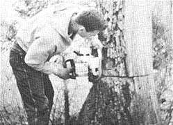

Okorn's Organic Homestead
Read how the Okorn’s harvested garden-fresh vegetables all winter long.
by ALICE OKORN
January/February 1971
The harvest is over here in Missouri and winter's first pass has sent temperatures nearly to zero. Since mulching is a much easier way of preserving some root crops than canning, we've just put three long rows of fat carrots to bed under a thick straw covering. We'll have fresh carrots all winter. The parsley in my herb garden gets mulched too, and I pot up a plant for use in the kitchen all winter.
The garden soil finally dried out enough for fall plowing. This creates a wonderfully pulverized and fine soil for spring planting, due to the freezing and thawing of the loose dirt. It also eliminates the danger of plowing too wet (one of the worse ways of abusing the soil and a guarantee of poor crops) in the spring. We'll only need to disc and smooth the garden before seeding. We also made a large bio-dynamic compost pile at the edge of the garden.
I just tallied up my 1970 season of canning and freezing, then went to the local supermarket to price everything and figure out what we've saved. Our 476 quarts of canned and frozen fruits and vegetables plus 35 pounds of frozen butter is worth $285.00 at supermarket prices . . . and this does not include my large jars of dried herbs. I recommend gardening and canning!
We've finished gathering our biennial harvest of walnuts. The 20-30 bushels of hulled nuts that we have may sound like a lot but we use many and sell some, picked out, to our customers. The persimmon crop was very good this year and we froze many for winter-long enjoyment as a breakfast fruit full of vitamin C.
Our apple trees are not producing yet so we went to a local orchard at the very end of harvest and picked four bushels of excellent apples for a dollar a bushel. I made applesauce, froze some sliced for winter pies and, of course, we eat many raw.
I found it quite pleasant during brisk fall weather to bundle up Cammy and Ash and go with Richard on the tractor and trailer to feed the pigs. Pigs love greens as much as I love salads and, until the first hard freeze, we hauled piles of freshly-cut comfrey to them. Comfrey grows so prolifically it can be cut several times a summer and makes fine pig feed (also good people tea). Now that it's frozen the pigs get alfalfa hay. They also consider wood ashes a big treat too and each fights and pushes for his share. The ashes are a good source of minerals and an inexpensive, effective preventive/cure for intestinal parasites.
Ours is a rolling farm so, to help control erosion, we raise mostly pasture, hay and wheat and plant a minimum of row crops. We do raise a small patch of field corn, however, from which we grind our own corn meal. Anyone with even a limited amount of ground (an extra large backyard, for instance) and no machinery at all can easily plant, harvest and shell a year's supply of "eatin' " field corn . . . all by hand. The outdoor work is enjoyable and well worth the reward of having your own good corn to grind.
The following is my favorite cornbread recipe:
CORN BREAD
Mix well, set aside:
1-3/4 cups yellow cornmeal
1/2 cup plus 2 Tbls. whole wheat flour
3/4 tsp. salt
3 tsps. baking powder
Beat well:
2 eggs
2 Tbls. honey or brown sugar
2 Tbls. lard (oil will do but not as well)
Stir in:
1 cup milk
Pour liquid mixture into dry mixture. Mix gently until all is moist. Spread into a greased 9" pan. Bake in preheated 400 degree oven for 25-30 minutes.
Soon we will butcher and it is one of my favorite jobs. There is something exciting about all the activity, the meats simmering outdoors in the old black kettle, sausage-making, brisk weather and the occasional nip from the bottle that goes with it. I plan to write a report, complete with photos and recipes.
|
 |
 |
|